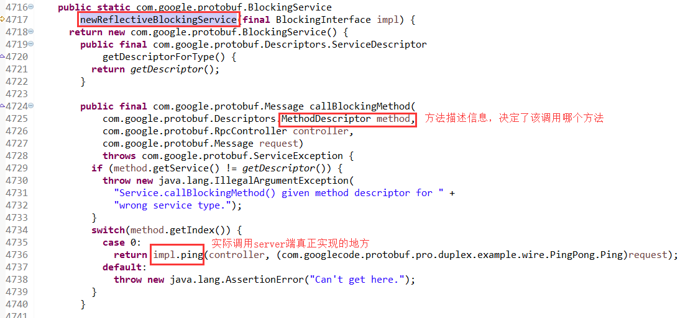

从 protobuf rpc 到 Hbase rpc实现
Protocol Buffers 最重要的是提供数据序列化编码解码，在很多项目都有应用，这里介绍一下官方提供的rpc支持，以前看到PB(Protocol Buffers)可以定义rpc，以为可以直接使用它自带的rpc，但是之前的项目使用的rest通信方式，后面自己实现rpc也是直接使用netty发送json对象来完成的，所以还没用过PB rpc，现在阅读hbase-master代码才知道PB rpc其实可以看成是rpc框架的抽象实现，有很多关键的地方比如rpc通信及其逻辑控制需要自己实现，类似一种rpc插件。
[1] https://developers.google.com/protocol-buffers/docs/proto#services
[2]
Defining Services
If you want to use your message types with an RPC (Remote Procedure Call) system, you can define an RPC service interface in a .proto file and the protocol buffer compiler will generate service interface code and stubs in your chosen language. So, for example, if you want to define an RPC service with a method that takes your SearchRequest and returns a SearchResponse, you can define it in your .proto file as follows:
service SearchService {
rpc Search (SearchRequest) returns (SearchResponse);
}
By default, the protocol compiler will then generate an abstract interface called SearchService and a corresponding "stub" implementation. The stub forwards all calls to an RpcChannel, which in turn is an abstract interface that you must define yourself in terms of your own RPC system. For example, you might implement an RpcChannel which serializes the message and sends it to a server via HTTP. In other words, the generated stub provides a type-safe interface for making protocol-buffer-based RPC calls, without locking you into any particular RPC implementation. So, in C++, you might end up with code like this:
从官网的描述来看，PB会生成SearchService接口实现stub(桩: 类似RMI),而stub并不是真正的实现，而是一种代理，它将转发所有调用给RpcChannel(接口，需要实现callMethod或者callBlockingMethod方法)来完成
继续看java如何实现 官网描述： https://developers.google.com/protocol-buffers/docs/reference/java-generated#service
主要分为两种1、异步回调的方式 2、阻塞调用
以阻塞调用为例
Blocking Interfaces
The RPC classes described above all have non-blocking semantics: when you call a method, you provide a callback object which will be invoked once the method completes. Often it is easier (though possibly less scalable) to write code using blocking semantics, where the method simply doesn't return until it is done. To accomodate this, the protocol buffer compiler also generates blocking versions of your service class. Foo.BlockingInterface is equivalent to Foo.Interface except that each method simply returns the result rather than call a callback. So, for example, bar is defined as:
abstract FooResponse bar(RpcController controller, FooRequest request)
throws ServiceException;
Analogous to non-blocking services, Foo.newReflectiveBlockingService(Foo.BlockingInterface) returns a BlockingService wrapping some Foo.BlockingInterface. Finally, Foo.BlockingStub returns a stub implementation of Foo.BlockingInterface that sends requests to a particular BlockingRpcChannel.
其中BlockingRpcChannel需要实现callBlockingMethod方法，参数为( Descriptors.MethodDescriptor method, RpcController controller, Message request, Message responsePrototype)，controller和request需要用户传入， controller用来实现rpc通信控制及错误处理相关方法，request则是用户需要发送的rpc消息体
官方给出了很多实现: RPC Implementations 以其中一种Java实现为例 http://code.google.com/p/protobuf-rpc-pro/
PB rpc service定义为
service BlockingPingService {
rpc ping(Ping) returns (Pong);
}
客户端代码 SimpleClient.java
PB生成的代码如下
可以看出客户端主要实现的是RpcChannel和BlockingRpcChannel接口，实现callBlockingMethod方法
继续看server端实现，官方对server端有一段描述 https://developers.google.com/protocol-buffers/docs/reference/java-generated#service
Foo will also contain a nested interface Foo.Interface. This is a pure interface that again contains methods corresponding to each method in your service definition. However, this interface does not extend the Service interface. This is a problem because RPC server implementations are usually written to use abstract Service objects, not your particular service. To solve this problem, if you have an object impl implementing Foo.Interface, you can call Foo.newReflectiveService(impl) to construct an instance of Foo that simply delegates to impl, and implements Service.
server端和client端有点类似，需要提供一个BlockingService的实现类，通过newReflectiveService(impl)来构造，impl则是实现BlockingInterface接口。实际的调用由impl来完成
PB生成的代码如下

了解了PB rpc服务端的逻辑再分析 http://code.google.com/p/protobuf-rpc-pro 的实现就比较清晰，从反向分析开始，protobuf-rpc-pro 一定会调用callBlockingMethod方法
从查找代码结果来看存在3个类调用了此方法 AsyncThreadPoolCallExecutor，SameThreadExecutor和ThreadPoolCallExecutor，此处的server端代码是SimpleServer.java 通过查看类的引用关系，
排除了其他两个实现，SimpleServer.java ==> DuplexTcpServerPipelineFactory ==> SameThreadExecutor
调用callBlockingMethod方法是在SameThreadExecutor的execute方法中，RpcServerHandler#decode --> RpcServer#request